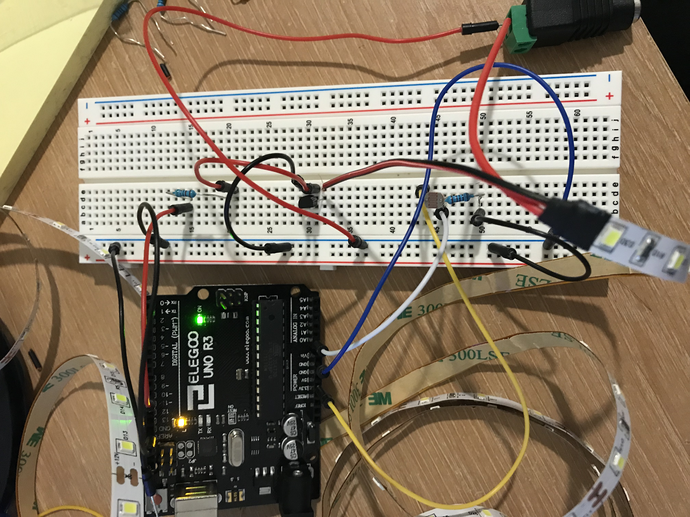
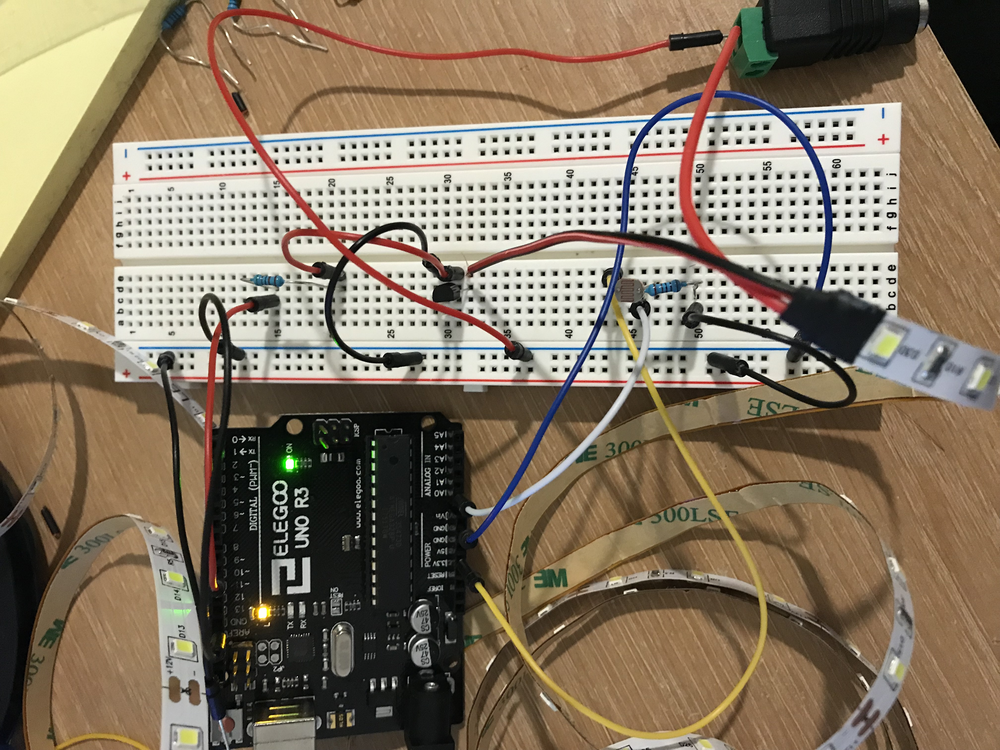

Jonathan Tran's Assignment 4!
The LED strip turns on when the light sensor isn't getting enough light
 The circuit board

The circuit board

the code
const int analogInPin = A0; // Analog input pin that the photoresistor is attached to
const int LED = 10; // Analog output pin that the LED Strip is attached to
int sensorValue = 0; // variable to store the value coming from the sensor
int outputValue = 0; // variable to store the value for the output
void setup() {
pinMode(LED, OUTPUT); // set the LED Strip as output
pinMode(analogInPin, INPUT); // set the analogInpin (the light sensor) as input
Serial.begin(9600); // initialize serial communications at 9600:
}
void loop() {
sensorValue = analogRead(analogInPin); // read the analog in value
outputValue = map(sensorValue, 0, 50, 0, 255); // map the sensor value to the LED Strip
if (sensorValue > 70) { // if the sensor value is greater than 70, turn the LED Strip off. (if there's enough light, turn the LED strip off)
analogWrite(LED, 0); // turn LED Strip off by setting output to 0.
Serial.print("Off "); // print to serial monitor, "Off"
} else if (sensorValue <= 70) { // if the output value is less than or equal to 200, turn the LED Strip on
analogWrite(LED, outputValue); // turn the LED strip on by setting the brightness to outputValue
Serial.print("On "); // print to serial monitor, "Off"
}
Serial.println(sensorValue); // print sensor value to the serial monitor
}
schematic and the calculations
my calculations showed I needed at least 25 ohms of resistance and for my LED strip, since I used 300 LEDs (the whole thing) i based my calculations off of that.